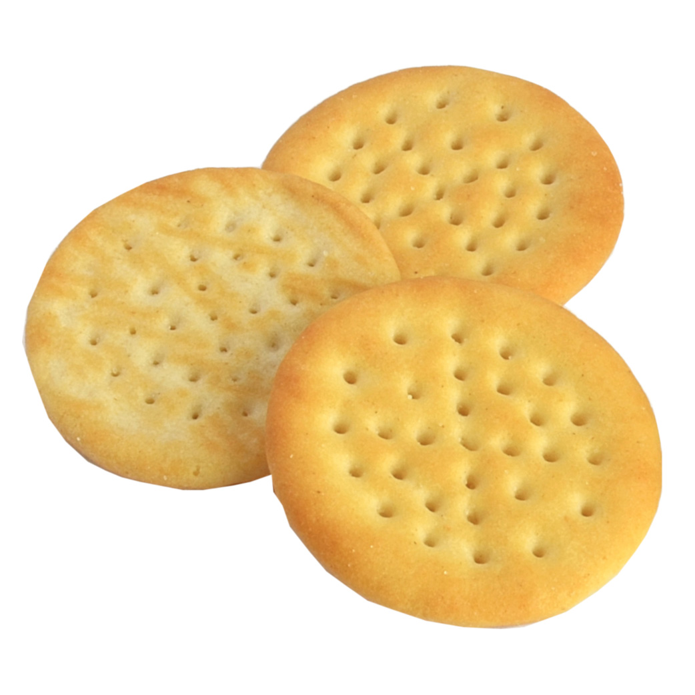

Mini Cheddars

Savoury biscuit?
What?
Um, savoury biscuit?
He held out a single Mini Cheddar between his thumb and forefinger, expecting me to take it. The audacity! The arrogance of man! It took all my strength to stop myself from hurling myself at the boy and stuffing those dreaded Mini Cheddars down his throat until he accidental-asphyxiated himself to an early demise. Reader, I was disgusted. But as I looked away from the savoury atrocity and into his kind eyes I saw that he did not know any better. Such heart-breaking innocence…